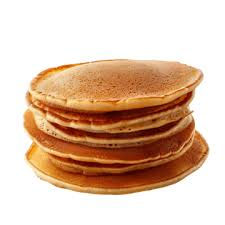

pancakes recipe

Description
This is an easy recipe to start your day off right
with a tasty meal!
Ingredients
- Flour
- Sugar
- Baking Powder
- Salt
- Milk and Oil
- Eggs
Steps
- Gather the ingredients.
- Combine flour, sugar, baking powder, and salt in a large bowl; make a well in the
center. Pour in milk, oil, and egg; mix until smooth.
- Heat a lightly oiled griddle or frying pan over medium-high heat. Pour or scoop
about ¼ cup batter per pancake onto the griddle; cook until bubbles form and
the edges are dry, 1 to 2 minutes. Flip; cook until browned on the other side.
Repeat with remaining batter.
- Serve hot and enjoy!
HOME